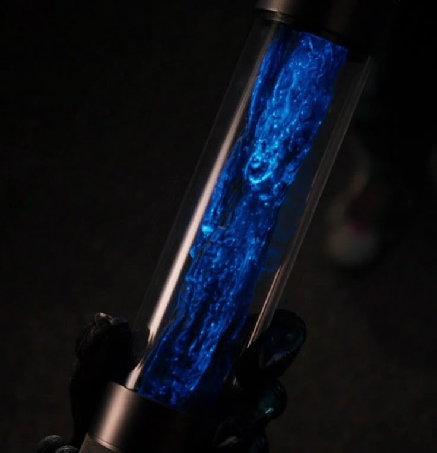
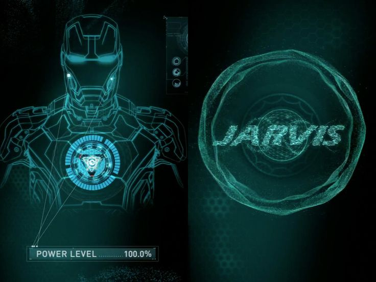
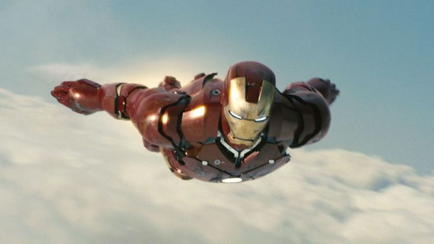

Explore as inovações, engenharia avançada e os sistemas futuristas apresentados nos filmes do Homem de Ferro, agora com reprodução de vídeo integrada.
Assista à Ultiimo Lançamento com participação do Homem de Ferro.
O que a comunidade está a dizer sobre a exibição e os efeitos visuais do trailer oficial.
"Os detalhes dos efeitos visuais e a forma como o Reator Arc brilha nas cenas de ação superaram todas as expectativas. Uma obra-prima visual!"
Crítica Verificada"A sincronização de áudio e a trilha sonora no trailer dão arrepios. A Stark Industries realmente sabe como impressionar nas telas."
Especialista em Defesa"Uau! Ver as tecnologias e os trajes em alta definição no trailer oficial é simplesmente incrível. Mal posso esperar para ver o filme completo!"
Estudante & FãInovações científicas e de engenharia exibidas nas telonas.
Miniaturização de uma usina de fusão nuclear capaz de manter o eletroímã do coração ativo e alimentar sistemas complexos.

Armazenamento de componentes modulares diretamente em uma habitação no peito, ativados por comando neural instantâneo.

Software de inteligência artificial avançada integrado à oficina, residência e sistemas táticos de voo.

Dispositivos de controle de campo magnético e conversão de energia para estabilização de voo supersônico.
| Filme / Momento | Tecnologia Destaque | Impacto Cinematográfico |
|---|---|---|
| Homem de Ferro (2008) | Protótipo de Oficina & Reator Arc | Construção da primeira unidade de energia limpa em uma caverna com recursos limitados. |
| Homem de Ferro 2 (2010) | Síntese de Novo Elemento | Criação de um acelerador de partículas caseiro para descobrir um elemento livre de toxicidade. |
| Homem de Ferro 3 (2013) | Protocolo Casa de Festa & Controle Remoto | Sincronização de dezenas de unidades autônomas operadas simultaneamente via inteligência artificial. |
| Vingadores: Ultimato (2019) | Navegação Temporal & Manopla Nano | Resolução do problema matemático de viagem no tempo e criação do aparato com as Joias do Infinito. |